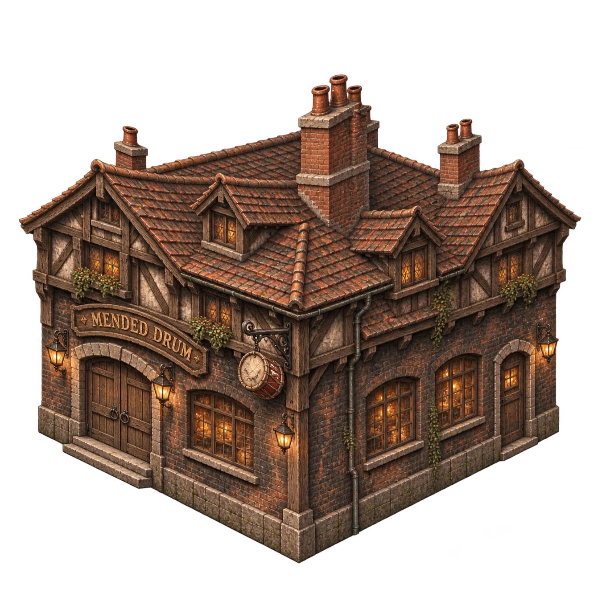
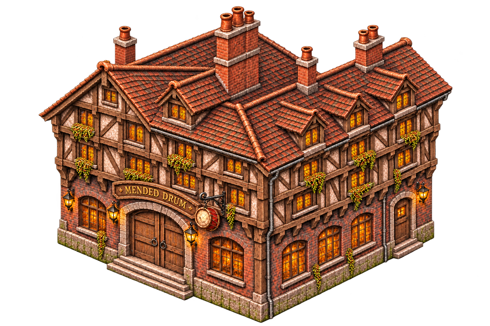

Earlier approved painting

Larger study

Cyan: sampled foundation. Magenta: target 2:1 slopes, pinned at the same near corner.
HOLD: the source still needs alpha and foundation correction. No live placement changed. Both images are shown at equal canvas width, not equal game scale.


Cyan: sampled foundation. Magenta: target 2:1 slopes, pinned at the same near corner.